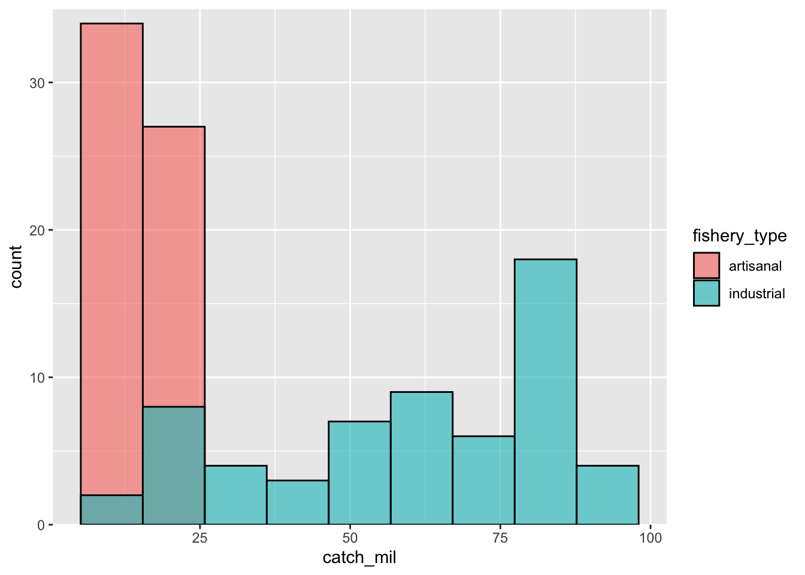
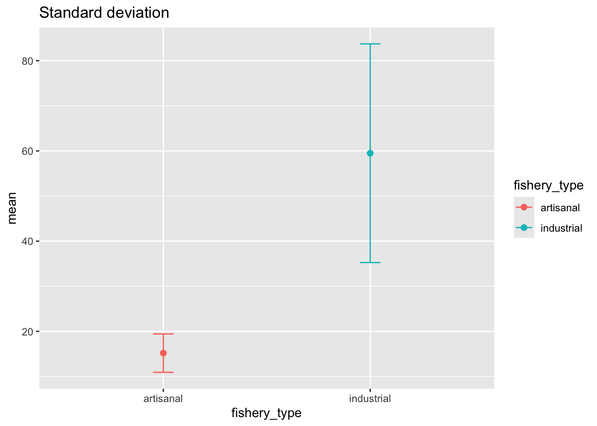
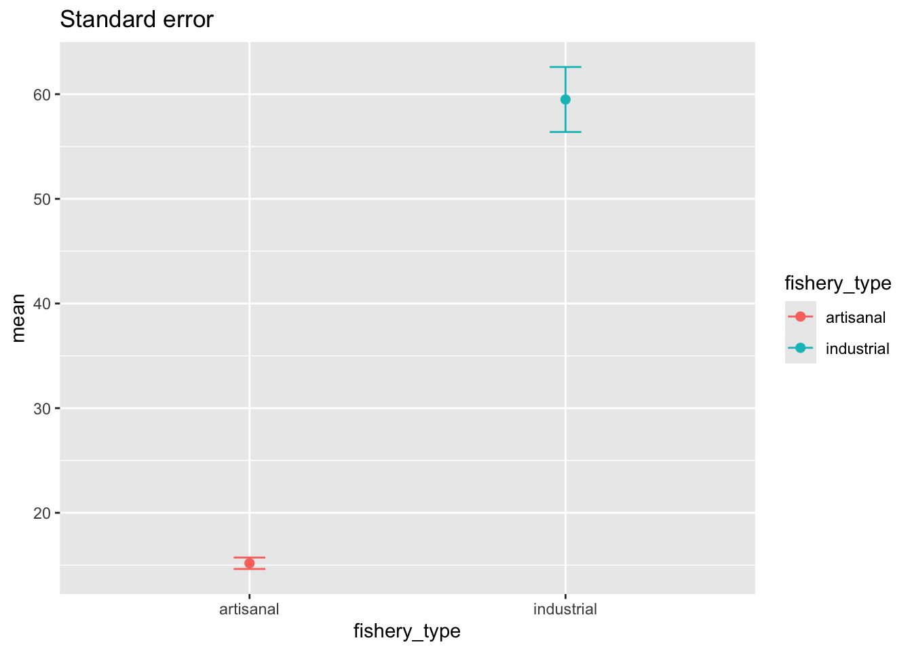
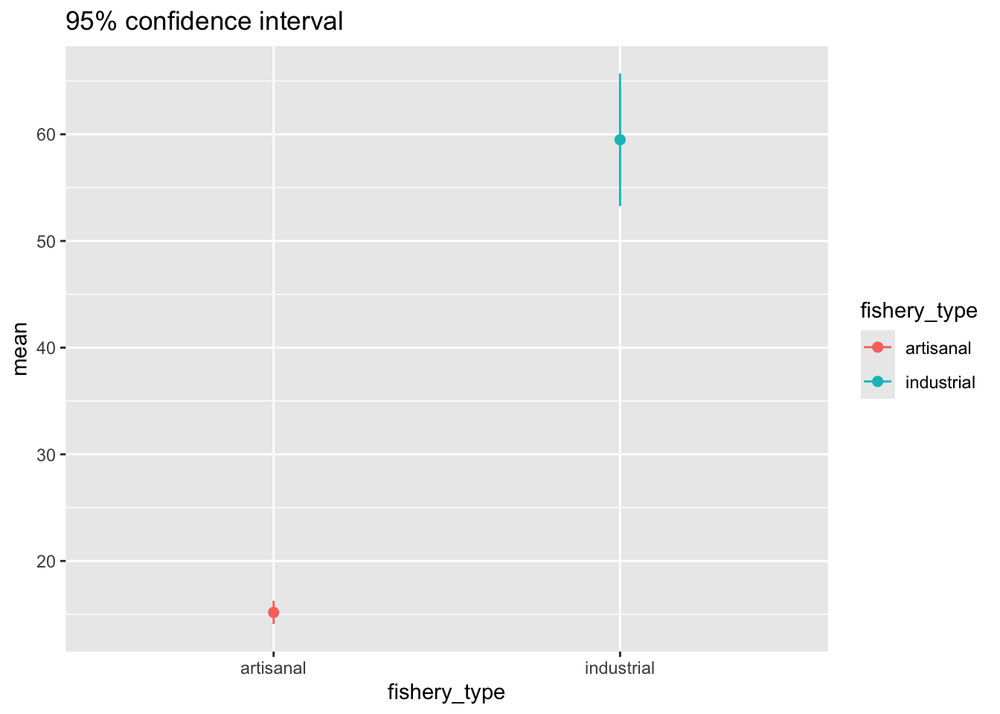
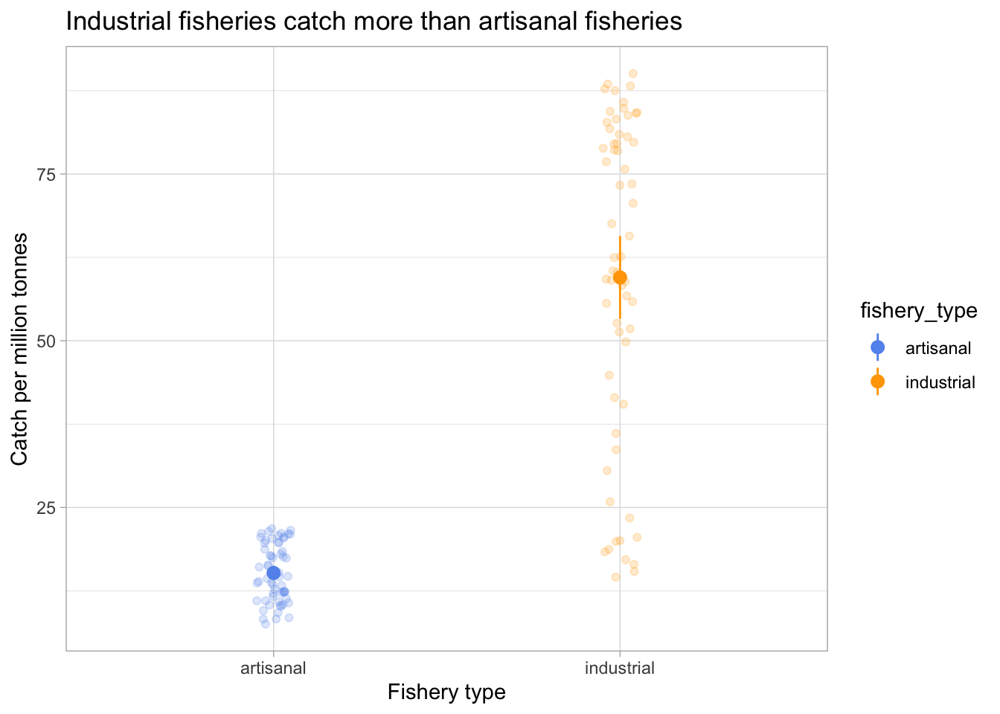
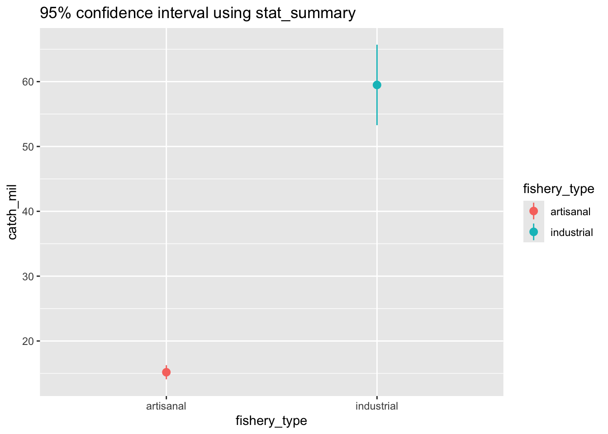

# load in packages
library(tidyverse)
library(janitor)1. Summary
Packages
tidyverse
janitor
Operations
- read in data using
read_csv()
- chain functions together using
%>%
- clean column names using
clean_names()
- create new columns using
mutate()
- select columns using
select()
- make data frame longer using
pivot_longer()
- rename columns using
rename()
- group data using
group_by()
- summarize data using
summarize()
- calculate standard deviation using
sd()
- calculate t-values using
qt()
- ungroup data using
ungroup()
- visualize data using
ggplot()
- create histograms using
geom_histogram()
- visualize means and raw data using
geom_point()
- visualize standard deviation, standard error, and confidence intervals using
geom_errorbar()andgeom_pointrange()
Data source
This workshop’s data comes from Tidy Tuesday 2021-10-12, which was from OurWorldinData.org.
2. Code
1. Set up
# read in data
global_catch <- read_csv("global-fishery-catch-by-sector.csv")2. Cleaning up
This chunk of code cleans the column names, converts catch to catch per million tons, selects columns, makes the data frame longer, and renames the columns.
global_catch_clean <- global_catch %>% # use the global_catch data frame
clean_names() %>% # clean up column names
mutate(artisanal = artisanal_small_scale_commercial/1000000,
industrial = industrial_large_scale_commercial/1000000) %>% # convert catch/1000000
select(year, artisanal, industrial) %>% # select columns
pivot_longer(cols = artisanal:industrial) %>% # make the data frame longer
rename(catch_mil = value,
fishery_type = name) # rename columns3. Making a histogram
This chunk of code creates a histogram.
ggplot(data = global_catch_clean,
aes(x = catch_mil,
fill = fishery_type)) + # fill the histogram based on the fishery type
geom_histogram(bins = 9, # set the number of bins
alpha = 0.6, # make the columns transparent
color = "black", # make the border of the columns black
position = "identity") + # make the columns sit on top of each other
scale_y_continuous(expand = c(0, 0), # get rid of the space between the x-axis and the columns
limits = c(0, 35)) # define the y-axis limits
4. Visualizing standard error and confidence intervals
a. Calculations
global_catch_summary <- global_catch_clean %>%
group_by(fishery_type) %>%
summarize(mean = mean(catch_mil),
n = length(catch_mil), # count the number of observations
df = n - 1, # calculate the degrees of freedom
sd = sd(catch_mil), # calculate the standard deviation
se = sd/sqrt(n), # calculate the standard error
tval = qt(p = 0.05/2, df = df, lower.tail = FALSE), # find the t value
margin = tval*se, # calculate the margin of error
ci_lower = mean - tval*se, # calculate the lower bound of the confidence interval
ci_higher = mean + tval*se) %>% # calculate the upper bound of the confidence interval
ungroup() # ungroup the data frame (good practice to do this after every group_by())b. Visualizations
First we want to visualize standard deviation.
ggplot(data = global_catch_summary, # use the summary data frame
aes(x = fishery_type,
y = mean,
color = fishery_type)) + # color the points by fishery type
geom_point(size = 2) + # plot the mean
geom_errorbar(aes(ymin = mean - sd, # plot the standard deviation
ymax = mean + sd),
width = 0.1) +
labs(title = "Standard deviation")
Then, we want to visualize standard error.
ggplot(data = global_catch_summary,
aes(x = fishery_type,
y = mean,
color = fishery_type)) +
geom_point(size = 2) +
geom_errorbar(aes(ymin = mean - se, # plot the standard error
ymax = mean + se),
width = 0.1) +
labs(title = "Standard error")
Then, we want to visualize the 95% confidence interval.
ggplot(data = global_catch_summary,
aes(x = fishery_type,
y = mean,
color = fishery_type)) +
geom_point(size = 2) +
geom_errorbar(aes(ymin = mean - margin, # plot the 95% confidence interval
ymax = mean + margin),
width = 0) +
labs(title = "95% confidence interval")
Lastly, we want to visualize the 95% confidence interval with the underlying data.
ggplot(data = global_catch_clean,
aes(x = fishery_type,
y = catch_mil,
color = fishery_type)) +
geom_point(position = position_jitter(width = 0.05,
seed = 1),
alpha = 0.2) +
geom_pointrange(data = global_catch_summary,
aes(x = fishery_type,
y = mean,
ymin = mean - margin,
ymax = mean + margin)) +
scale_color_manual(values = c("artisanal" = "cornflowerblue",
"industrial" = "orange")) +
labs(x = "Fishery type",
y = "Catch per million tonnes",
title = "Industrial fisheries catch more than artisanal fisheries") +
theme_light()
5. Extra stuff
a. Controlling boundaries in a histogram
The general steps to do this are:
- calculate the range
- determine the number of observations
- calculate the number of bins you want (then round to the nearest whole number)
- calculate the width of each bin by taking the range and dividing it by the number of bins - 2
- define the line breaks by creating a sequence of numbers, calculating the boundaries for each bin (and if necessary, rounding the boundaries)
# calculate the range
range <- max(global_catch_clean$catch_mil) - min(global_catch_clean$catch_mil)
# determine the number of observations
obs <- nrow(global_catch_clean)
# calculate the number of bins using the Rice Rule
# note that this doesn't come out to a whole number, so it's rounded
bins <- 2*(obs^(1/3)) %>%
round(digits = 0)
# calculate the width of the bin
binwidth <- range/(bins - 2)
# set up a sequence of numbers from 0 to 100
seq <- seq(from = 0, to = 100, by = 1)
# calculate the axis breaks
axis_breaks <- seq*binwidth + (binwidth/2)
# round the axis breaks
axis_breaks_rounded <- round(axis_breaks,
digits = 1)Then you can make your histogram with the right line breaks:
ggplot(data = global_catch_clean,
aes(x = catch_mil,
fill = fishery_type)) +
geom_histogram(binwidth = binwidth,
alpha = 0.6,
color = "black",
position = "identity") +
scale_x_continuous(breaks = axis_breaks_rounded) +
scale_y_continuous(expand = c(0, 0),
limits = c(0, 35))
b. plotting the confidence interval using stat_summary
ggplot(data = global_catch_clean,
aes(x = fishery_type,
y = catch_mil,
color = fishery_type)) +
stat_summary(fun.data = mean_cl_normal,
geom = "pointrange") +
labs(title = "95% confidence interval using stat_summary")